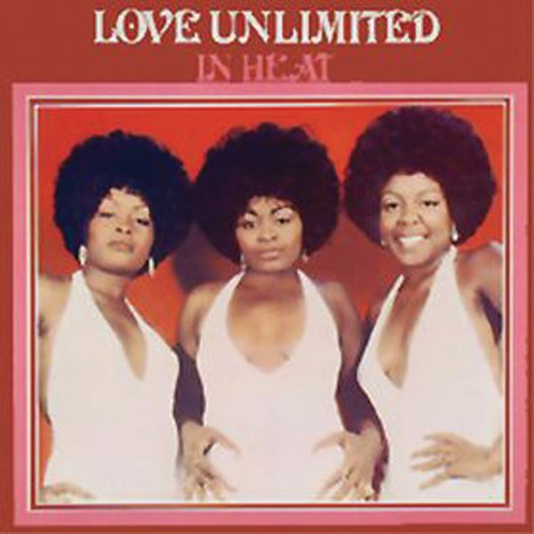
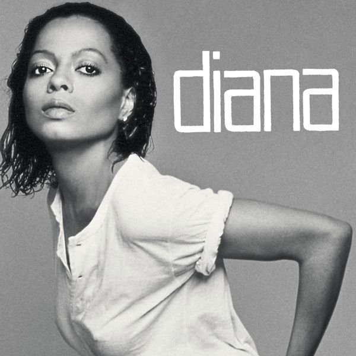
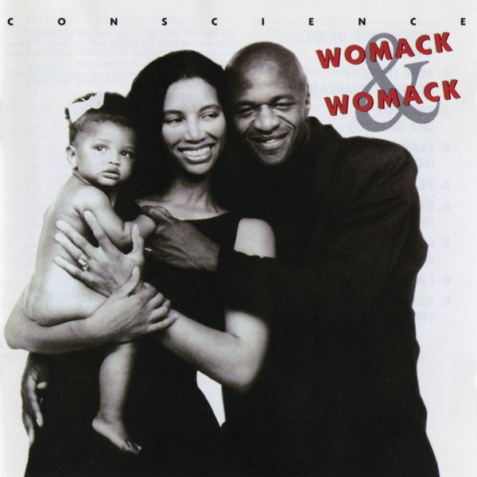
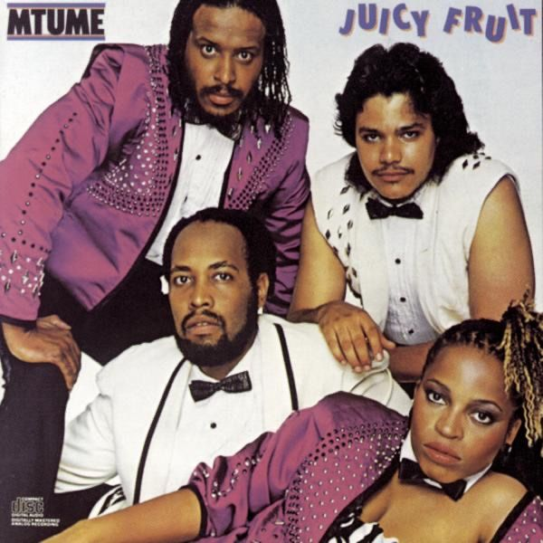
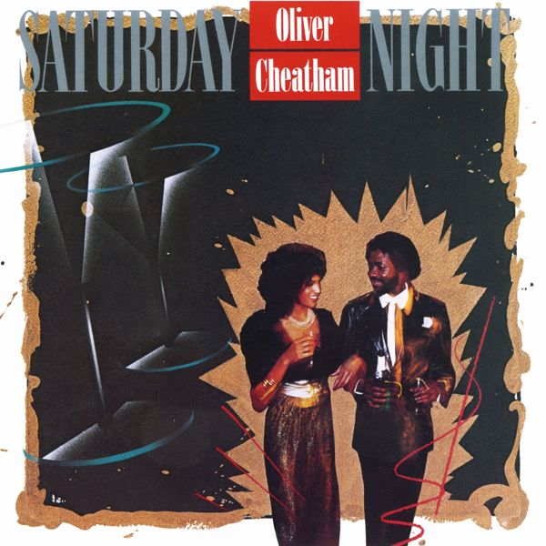
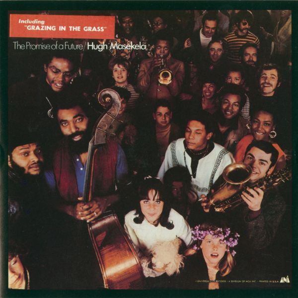

Chiffres au 14 novembre 2026. Premier post : 13 octobre 2026.Figures as of 14 November 2026. First post: 13 October 2026.

Just an Illusion
Imagination
N°1 en Italie, n°2 au Royaume-Uni… jamais au Hot 100. Puis Mariah Carey l’a samplé.No. 1 in Italy, UK No. 2… never on the Hot 100. Then Mariah Carey sampled it.
Cheetah Africa
Makeba, Fela, Manu Dibango, Salif Keïta, Mulatu… Les géants de la musique africaine, un artiste à la fois, avec leur histoire et leurs disques.Makeba, Fela, Manu Dibango, Salif Keïta, Mulatu… The giants of African music, one artist at a time, with their stories and records.
Les histoiresThe stories
Une sélection de disques racontés sur le compte.A few of the records we've told on the account.
Fais glisser pour voir les autres →Swipe to see more →
NOUVEAUNEWN°1 en Italie, n°2 au Royaume-Uni… jamais au Hot 100. Puis Mariah Carey l’a samplé.No. 1 in Italy, UK No. 2… never on the Hot 100. Then Mariah Carey sampled it.
Lire l’histoire →Read the story →
Le guitariste de Get Lucky a écrit Le Freak, 35 ans plus tôt.Get Lucky’s guitarist wrote Le Freak, 35 years earlier.
Lire l’histoire →Read the story →
Le n°1 instrumental de Barry White… chanté par son trio.Barry White’s instrumental No. 1… sung by his trio.
Lire l’histoire →Read the story →
Écrite pour Sister Sledge… qui ont eu « He’s the Greatest Dancer » en échange.Written for Sister Sledge… who got “He’s the Greatest Dancer” in exchange.
Lire l’histoire →Read the story →
Teena Marie aux chœurs, 5 semaines n°1 R&B.Teena Marie on backing vocals, 5 weeks at No. 1 R&B.
Lire l’histoire →Read the story →
Qui joue quoi : batterie, basse, piano et voix, un instrument à la fois.Who plays what: drums, bass, piano and vocals, one instrument at a time.
Lire l’histoire →Read the story →
Découverte au Gong Show, un télé-crochet, deux ans plus tôt.Discovered on The Gong Show, a TV talent contest, two years earlier.
Lire l’histoire →Read the story →
Écrite par Chic, remixée par Diana sans leur accord.Written by Chic, remixed by Diana without their approval.
Lire l’histoire →Read the story →
Enregistrée en une seule prise, avec un bassiste de 17 ans payé 70 dollars.Recorded in one take, with a 17-year-old bassist paid $70.
Lire l’histoire →Read the story →
103KN°2 en Suisse, n°1 aux Pays-Bas… et jamais classée aux États-Unis.No. 2 in Switzerland, No. 1 in the Netherlands… and never charted in the US.
Lire l’histoire →Read the story →
109KBouclée vers 2 h du matin, 8 semaines n°1 R&B, puis la base de « Juicy » de Biggie.Finished around 2 a.m., 8 weeks at No. 1 R&B, then the base of Biggie’s “Juicy”.
Lire l’histoire →Read the story →
312KN°37 R&B aux États-Unis… puis GTA: Vice City et un n°1 anglais vingt ans plus tard.No. 37 R&B in the US… then GTA: Vice City and a UK No. 1 twenty years later.
Lire l’histoire →Read the story →Cheetah Africa
La musique africaine de 1950 à 1999, un artiste à la fois. Chaque histoire est un Reel numéroté sur @cheetah_vinyl_africa.African music from 1950 to 1999, one artist at a time. Each story is a numbered Reel on @cheetah_vinyl_africa.
Fais glisser pour voir les autres →Swipe to see more →
 Nº 012
Nº 012Trop libre pour la radio, il chantait dans les mariages. Il est devenu le roi du raï.Too free for the radio, he sang at weddings. He became the King of Raï.
Lire l’histoire →Read the story →Premier étudiant africain de Berklee. Il invente l’éthio-jazz.Berklee’s first African student. He invented Ethio-jazz.
Lire l’histoire →Read the story → Nº 010
Nº 010Partie du Bénin en 1983. Cinq Grammys plus tard.She left Benin in 1983. Five Grammys later.
Lire l’histoire →Read the story → Nº 009
Nº 009Chanteur à 16 ans dans un club de Dakar. Ministre à 52 ans.A club singer in Dakar at 16. A government minister at 52.
Lire l’histoire →Read the story → Nº 008
Nº 008Elle chantait pieds nus dans les bars de Mindelo. Le monde l’a découverte à 47 ans.She sang barefoot in the bars of Mindelo. The world discovered her at 47.
Lire l’histoire →Read the story →Le premier single africain à dépasser le million d’exemplaires.The first African single to sell over a million copies.
Lire l’histoire →Read the story →
Nº 006Sa trompette lui venait de Louis Armstrong. Son tube s’est vendu à 4 millions.His trumpet came from Louis Armstrong. His hit sold 4 million.
Lire l’histoire →Read the story → Nº 005
Nº 005Une chanson jouée à Bruxelles pendant qu’on négociait l’indépendance du Congo.A song played in Brussels while Congo’s independence was being negotiated.
Lire l’histoire →Read the story →Descendant de l’empereur du Mali, rejeté pour son albinisme. Il devient « la voix d’or de l’Afrique ».A descendant of Mali’s founding emperor, rejected for his albinism. He became “the golden voice of Africa”.
Lire l’histoire →Read the story → Nº 003
Nº 003Une face B d’un hymne de foot… reprise par Michael Jackson dans Thriller.The B-side of a football anthem… borrowed by Michael Jackson on Thriller.
Lire l’histoire →Read the story → Nº 002
Nº 002Un album contre les militaires. La réponse : un millier d’hommes armés chez lui.An album against the military. The answer: a thousand armed men at his door.
Lire l’histoire →Read the story →Interdite de retour chez elle pendant 31 ans. On l’appelait Mama Africa.Barred from going home for 31 years. They called her Mama Africa.
Lire l’histoire →Read the story →The Cheetah Club
C'est le nom de la communauté qui commente, corrige, raconte ses souvenirs de piste et propose les prochains disques. Beaucoup de sujets viennent de vous.That's the community that comments, corrects us, shares dance-floor memories and suggests the next records. Many of our stories come from you.
Côté Afrique, le compte @cheetah_vinyl_africa raconte les géants du continent : Mory Kanté, Angélique Kidjo, Mulatu Astatke…For Africa, @cheetah_vinyl_africa tells the stories of the continent's greats: Mory Kanté, Angélique Kidjo, Mulatu Astatke…